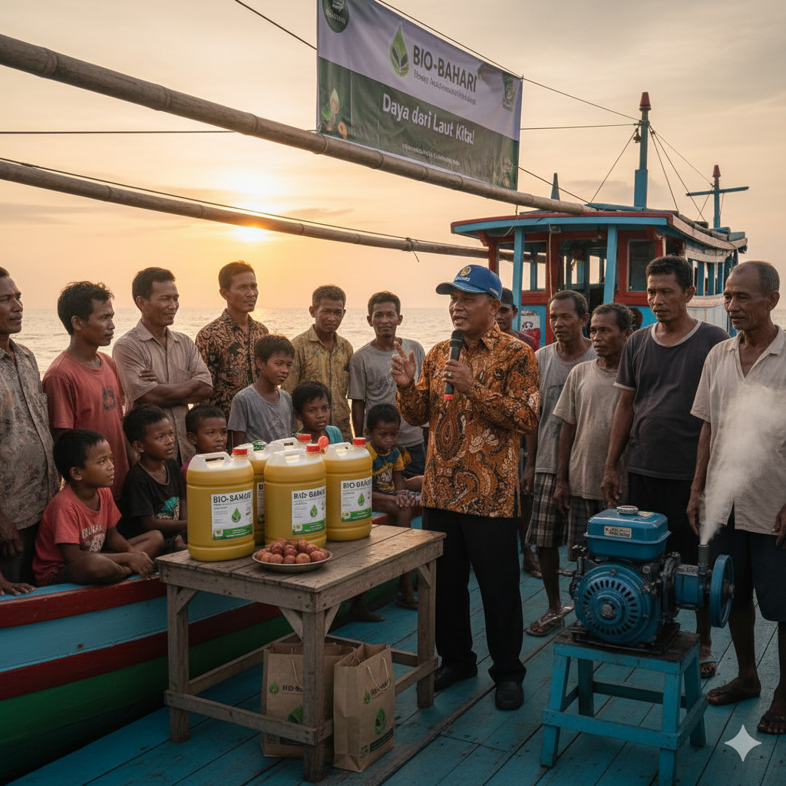
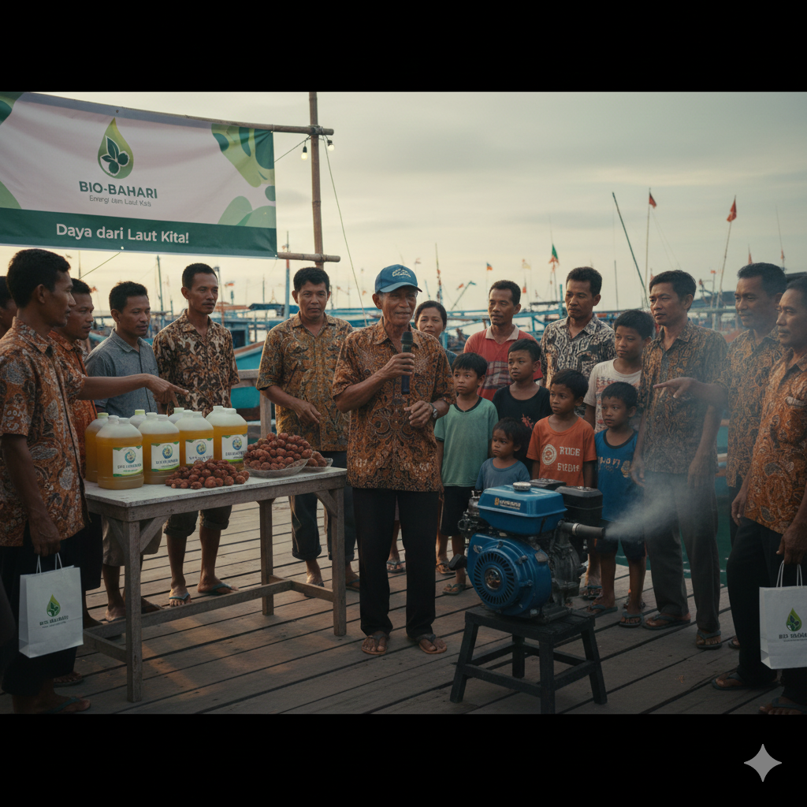
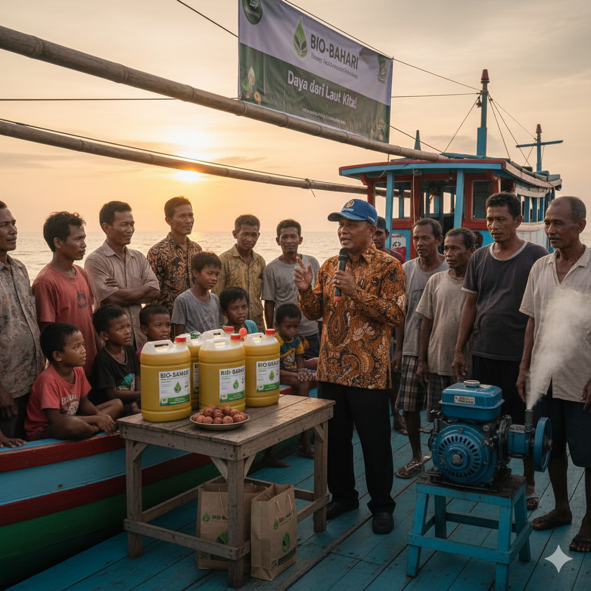
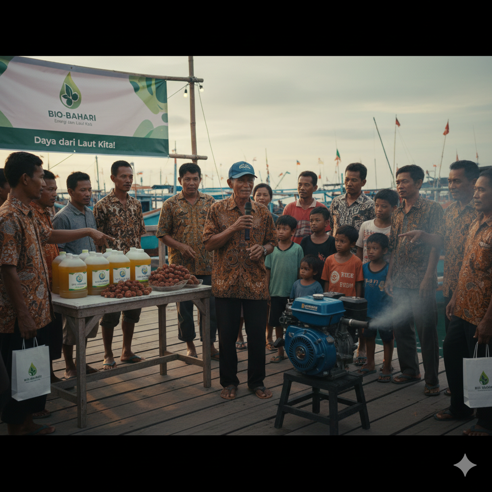
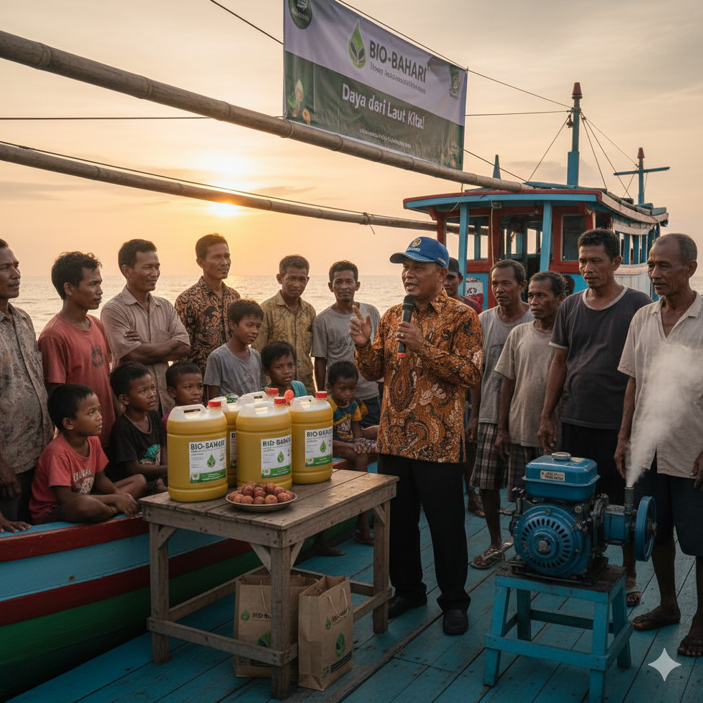
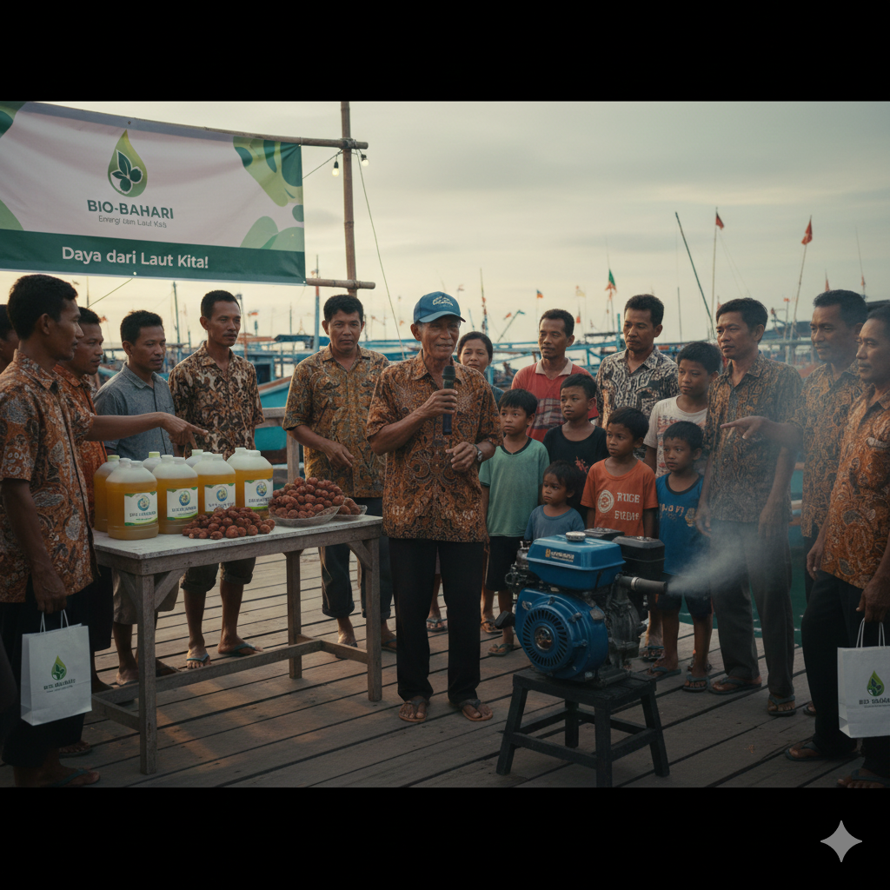

DIDUKUNG OLEH
 



Revolusi bahan bakar nelayan dengan Biodiesel B30 Nyamplung. Lebih hemat, ramah mesin, dan menjaga laut Indonesia.
Hitung PenghematanSolusi terintegrasi hulu ke hilir untuk masalah energi pesisir.
Mengolah limbah biji Nyamplung menjadi energi. Cangkang jadi briket, ampas jadi pakan ternak.
Mengatasi kelangkaan solar subsidi dengan alternatif yang stabil, murah, dan mesin lebih awet.
Setiap liter B30 mengurangi emisi karbon signifikan & penanaman pohon mencegah abrasi pantai.
Calophyllum inophyllum atau Nyamplung tumbuh subur di pesisir. Bio-Bahari mengolah bijinya menjadi Biodiesel B30 (30% Minyak Nyamplung, 70% Solar) yang sesuai standar SNI mesin kapal nelayan (10-24 HP).
40-73% Minyak
Windbreaker Alami
Tidak ganggu stok pangan
"Awalnya takut mesin macet soalnya saya sering pakai solar biasa, tapi ternyata tarikan enteng dan asap hitam berkurang. Harga lebih hemat dari eceran. Terus ga cuma ngejual aja, tapi saya diajarin prosesnya. Mantaplah BIO-BAHARI, makasi juga ke Mbak Meita udah menciptakan solusi buat nelayan kaya kita"
"Dulu biji nyamplung cuma jadi sampah pantai. Sekarang saya jual ke Bio-Bahari jadi uang belanja tambahan. Ga cuma saya, tapi BIO-BAHARI memberdayakan ibu-ibu di desa saya"
DIDUKUNG OLEH


Bandingkan penggunaan Solar biasa vs Biodiesel B30 Nyamplung
Data akan dikirim ke WhatsApp Admin.
Lihat proses produksi di workshop.
Jl. Pesisir Harapan No. 88
+62 812-3456-7890
admin@bio-bahari.id